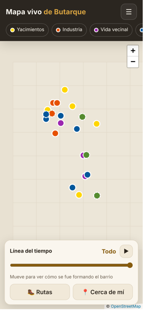

Mapa vivo de Butarque
21 lugares en 5 capas, una línea del tiempo, rutas a pie y la ficha de cada punto. Funciona en el móvil.
Abrir el mapaVillaverde · Madrid
La historia del barrio, desde los yacimientos del Manzanares hasta hoy: un mapa interactivo con sus lugares y tres minijuegos sobre el yacimiento paleontológico.

21 lugares en 5 capas, una línea del tiempo, rutas a pie y la ficha de cada punto. Funciona en el móvil.
Abrir el mapa
Ordena la historia, Excavación en el Estanque de Tormentas y Cazadores del Manzanares. Se juegan en el navegador.
Ir al ArcadeVersión de demostración. Esta web no tiene servidor ni base de datos: el mapa enseña los datos tal como estaban al publicarla, y no se pueden enviar recuerdos ni entrar al panel editorial.